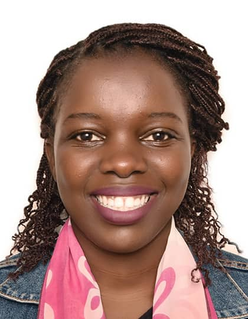

Summary
Approached each day and unique challenges with enthusiasm, patience and humor.
Education
Bachelor of Software Engineering, Expected in 11/2025
- AUCA(Adventist University of Central Africa) - Kigali, Rwanda
High School Diploma, 12/2017
- Lycee Notre Dame De Citeaux
Work experience
Part-time job, 05/2022 - 05/2022 Inyange Industry Company, Kigali
- Arranging all delivering receipts from January up to June for the closing checking
and what earned in the half part of the year
- Improved document organization by creating a comprehensive
filing system that improved retrieval times for essential records
Volunteer, 01/2018 - 04/2018 Itorero Program, Kigali, Rwanda
- Enhanced community engagement by organizing and leading
outreach events.
- Promoted environment awareness with educational workshops
and hands-on activities.
Intern, 10/2016 - 12/2016 AZ plus, Kigali, Rwanda
- Enhanced intern productivity by assisting with project
coordination and providing ongoing support
- Streamlined office processes for improved effieciency and time
management through regular organization and filing
- Contributed to a positive team environment by collaborating with
fellow interns on group projects and presentations.
- Supported staff members in their daily tasks, reducing workload
burden and allowing for increased focus on higher-priority
assignments
Skills
- Html
- CSS
- python
- C programming
- C++
- Microsoft Office
- Office Equipment Operation
- Multitasking
- Basic Accounting
- Attention to Detail
- Computer Skills
- Recordkeeping
Awards and Certificates
- IDebate Camp Certificate in 2016
- Akazi Kanoze Certificate in 2016
- FemEng Certificate in 2019
Languages
Other